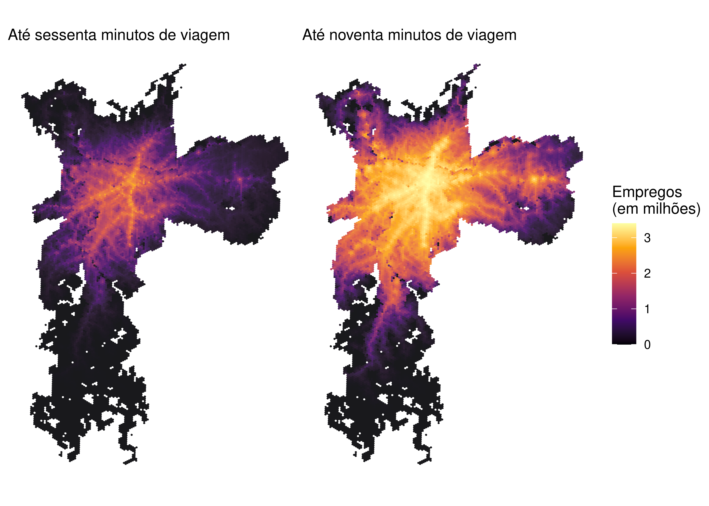
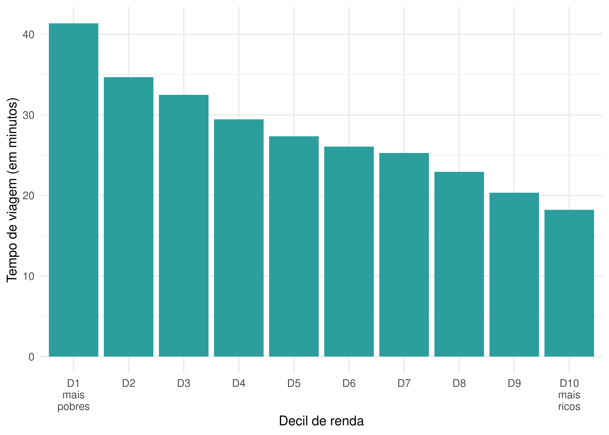
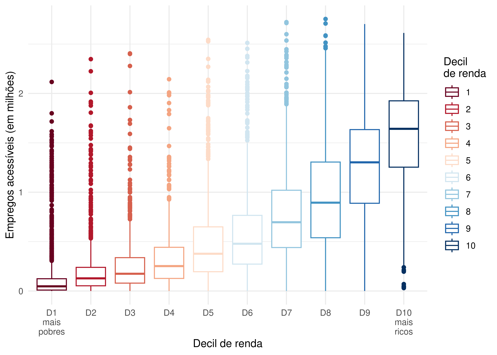
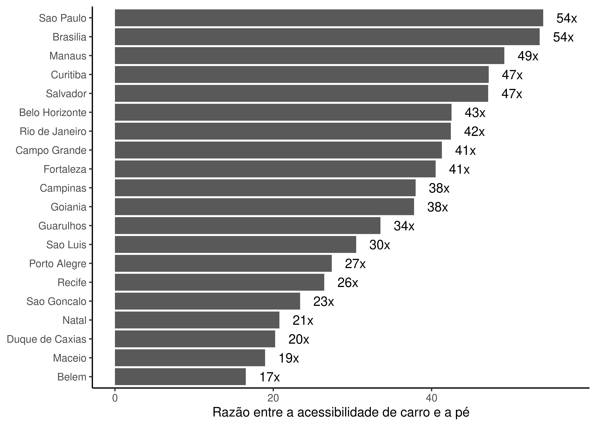

Finalmente, o pacote {aopdata} também permite baixar, para todas as cidades incluídas no projeto, estimativas de acesso a empregos e a serviços de saúde, de educação e de assistência social para 2017, 2018 e 2019.
Esses dados podem ser baixados com a função read_access(), que funciona de maneira análoga às funções read_population() e read_landuse(), apresentadas anteriormente. Além de indicar a cidade (parâmetro city) e o ano de referência (year), no entanto, é necessário também informar o modo de transporte (mode) e o intervalo do dia (pico, entre 6h e 8h, ou fora-pico, entre 14h e 16h, controlado pelo parâmetro peak).
No exemplo a seguir, mostramos como baixar estimativas de acessibilidade no período de pico em São Paulo referentes a 2019. Nesse exemplo, baixamos as estimativas de acessibilidade tanto por automóvel quanto por transporte público e as unimos em um único data.frame. Note que essa função resulta em uma tabela que traz também, automaticamente, os dados de população e de uso do solo.
# baixa dados do AOP de acessibilidade por transporte públicoacesso_tp <- aopdata::read_access(city ="São Paulo",mode ="public_transport",year =2019,peak =TRUE,geometry =TRUE,showProgress =FALSE)# baixa dados do AOP de acessibilidade por automóvelacesso_carro <- aopdata::read_access(city ="São Paulo",mode ="car",year =2019,peak =TRUE,geometry =TRUE,showProgress =FALSE)# junta os dados em um único dataframedados_sp <-rbind(acesso_tp, acesso_carro)names(dados_sp)
Como podemos ver, assim como nos casos das tabelas de dados sociodemográficos e de uso do solo, os nomes das variáveis de estimativas de acessibilidade estão organizados em códigos, como CMAEF30, TMISB e CMPPM60. Esses códigos são resultado da combinação de três componentes, conforme descrito a seguir.
O tipo de indicador de acessibilidade: é indicado pelas três primeiras letras do código. Os dados incluem três categorias de indicadores:
CMA - indicador de acessibilidade cumulativa ativa;
CMP - indicador de acessibilidade cumulativa passiva; e
TMI - indicador de tempo mínimo até a oportunidade mais próxima.
O tipo de atividade para a qual os níveis de acessibilidade foram calculados ou a que pessoas o indicador se refere: é descrito pelas letras seguintes, que estão no meio do código. Os dados incluem estimativas de acessibilidade para diversos tipos de atividades:
TT - todos os empregos;
TB - empregos de baixa escolaridade;
TM - empregos de média escolaridade;
TA - empregos de alta escolaridade;
ST - todos os estabelecimentos públicos de saúde;
SB - estabelecimentos públicos de saúde de baixa complexidade;
SM - estabelecimentos públicos de saúde de média complexidade;
SA - estabelecimentos públicos de saúde de alta complexidade;
ET - todas as escolas públicas;
EI - escolas públicas de ensino infantil;
EF - escolas públicas de ensino fundamental;
EM - escolas públicas de ensino médio;
MT - todas as matrículas de escolas públicas;
MI - matrículas de escolas públicas de ensino infantil;
MF - matrículas de escolas públicas de ensino fundamental;
MM - matrículas de escolas públicas de ensino médio; e
CT - todos os CRAS.
No caso do indicador de acessibilidade passiva, as letras no meio do nome da variável indicam a qual grupo populacional os níveis de acessibilidade se referem:
PT - toda a população;
PH - população de homens;
PM - população de mulheres;
PB - população branca;
PN - população negra;
PA - população amarela;
PI - população indígena;
P0005I - população de 0 a 5 anos;
P0614I - população de 6 a 14 anos;
P1518I - população de 15 a 18 anos;
P1924I - população de 19 a 24 anos;
P2539I - população de 25 a 39 anos;
P4069I - população de 40 a 69 anos; e
P70I - população de 70 anos ou mais.
O tempo limite de viagem utilizado no cálculo do indicador: é descrito pelos números ao final do código. Esses números somente se aplicam aos indicadores de acessibilidade cumulativa ativa e passiva e incluem os limites de 15, 30, 45, 60, 90 e 120 minutos, dependendo do modo de transporte.
Exemplos:
CMAEF30: número de escolas públicas de ensino fundamental acessíveis em até 30 minutos de viagem;
TMISB: tempo de viagem até o estabelecimento público de saúde com serviços de baixa complexidade mais próximo; e
CMPPM60: quantidade de mulheres que conseguem acessar determinada célula da grade espacial em até 60 minutos de viagem.
A descrição completa das variáveis também pode ser consultada na documentação da função, rodando em uma sessão de R o comando ?read_access. As subseções a seguir mostram exemplos de visualizações desses dados em forma de mapas e gráficos.
9.1 Mapa do tempo para acessar o hospital mais próximo
Neste exemplo, comparamos o tempo de acesso por automóvel e por transporte público até o hospital mais próximo de cada hexágono. Para analisar o tempo mínimo de viagem (TMI) até hospitais de alta complexidade (SA), utilizamos a variável TMISA. Com o código a seguir, carregamos as bibliotecas de visualização de dados e apresentamos a distribuição espacial do tempo de acesso com os dois modos de transporte. Como os tempos de viagem por transporte público costumam ser muito mais longos do que por automóvel, truncamos a distribuição dos valores da variável em sessenta minutos.
Figura 9.1: Tempo de viagem até o hospital de alta complexidade mais próximo em São Paulo
9.2 Mapa da quantidade de empregos acessíveis
Os dados do {aopdata} também tornam muito simples a comparação da quantidade de oportunidades acessíveis em diferentes tempos de viagem. Com o código a seguir, por exemplo, ilustramos como visualizar lado a lado as distribuições espaciais do número de empregos acessíveis em até sessenta e noventa minutos de viagem, respectivamente, por transporte público.
# estabelece valores usados na legenda do mapalimites_legenda <-c(0, max(acesso_tp$CMATT90, na.rm =TRUE) /1000000)# configura os mapasfig60 <-ggplot(subset(acesso_tp, !is.na(mode))) +geom_sf(aes(fill = CMATT60 /1000000), color =NA, alpha =0.9) +scale_fill_viridis_c(option ="inferno", limits = limites_legenda) +labs(subtitle ="Até sessenta minutos de viagem",fill ="Empregos\n(em milhões)" ) +theme_void()fig90 <-ggplot(subset(acesso_tp, !is.na(mode))) +geom_sf(aes(fill = CMATT90 /1000000), color =NA, alpha =0.9) +scale_fill_viridis_c(option ="inferno", limits = limites_legenda) +labs(subtitle ="Até noventa minutos de viagem",fill ="Empregos\n(em milhões)" ) +theme_void()fig60 + fig90 +plot_layout(guides ="collect")

Figura 9.2: Quantidade de empregos acessíveis por transporte público em São Paulo
9.3 Desigualdades de acesso a oportunidades
Existem diversas maneiras de analisar quão desiguais são as condições de acesso a oportunidades nas cidades brasileiras a partir dos dados do {aopdata}. Nesta subseção, apresentamos três exemplos deste tipo de análise.
9.3.1 Desigualdade no tempo de acesso a oportunidades
Neste primeiro exemplo, vamos comparar o tempo médio de viagem até o hospital público mais próximo de pessoas de diferentes níveis de renda. Para isso, calculamos o tempo médio de acesso a estabelecimentos de saúde de alta complexidade ponderado pela população de cada célula da nossa grade espacial. Essa ponderação é necessária porque cada célula, por abrigar um número de pessoas diferente das demais, contribui de forma diferente para a média da população como um todo.
Antes de realizar o cálculo, cabe observar que algumas células da cidade não conseguem acessar nenhum hospital em até duas horas de viagem. Nesses casos, o valor das variáveis de tempo mínimo de viagem é infinito (Inf). Para lidar com isso, neste exemplo substituímos todos os valores Inf por um tempo de viagem de 120 minutos.
# copia os dados de acesso em um novo dataframedesigualdade_tp <- data.table::as.data.table(acesso_tp)# substitui os valores Inf por 120desigualdade_tp[, TMISA :=ifelse(is.infinite(TMISA), 120, TMISA)]# calcula o tempo de viagem médio por decil de rendadesigualdade_tp <- desigualdade_tp[ , .(media =weighted.mean(x = TMISA, w = P001, na.rm =TRUE)), by = R003]desigualdade_tp <-subset(desigualdade_tp, !is.na(media))ggplot(desigualdade_tp) +geom_col(aes(y = media, x =factor(R003)), fill ="#2c9e9e", color =NA) +scale_x_discrete(labels =c("D1\nmais\npobres", paste0("D", 2:9), "D10\nmais\nricos") ) +labs(x ="Decil de renda", y ="Tempo de viagem (em minutos)") +theme_minimal()

Figura 9.3: Média de tempo de viagem por transporte público em São Paulo até o hospital mais próximo
9.3.2 Desigualdade no número de oportunidades acessíveis
Outra maneira de examinar a desigualdade de acesso a oportunidades é comparar a quantidade de oportunidades acessíveis por diferentes grupos populacionais considerando os mesmos modos de transporte e limites de tempo de viagem. Nesse caso, analisamos o indicador de acessibilidade cumulativa ativa, representado por variáveis cujos códigos começam com CMA na base de dados do {aopdata}. No exemplo a seguir, comparamos a quantidade de empregos acessíveis por pessoas de diferentes decis de renda, considerando viagens de transporte público limitadas em sessenta minutos de viagem.
ggplot(subset(acesso_tp, !is.na(R003))) +geom_boxplot(aes(x =factor(R003), y = CMATT60 /1000000, color =factor(R003)) ) +scale_color_brewer(palette ="RdBu") +labs(color ="Decil\nde renda",x ="Decil de renda",y ="Empregos acessíveis (em milhões)" ) +scale_x_discrete(labels =c("D1\nmais\npobres", paste0("D", 2:9), "D10\nmais\nricos") ) +theme_minimal()

Figura 9.4: Distribuição do número de empregos acessíveis por transporte público em São Paulo
Por fim, podemos também comparar como o uso de diferentes modos de transporte resulta em diferentes níveis de acessibilidade para a população e como essa diferença varia entre cidades. No exemplo a seguir, comparamos a quantidade de empregos acessíveis em até trinta minutos de viagem a pé e de carro. Para isso, precisamos primeiro baixar os dados de acessibilidade por ambos os modos para todas as cidades do projeto.
Em seguida, calculamos para cada cidade e para cada modo de transporte a média ponderada do número de empregos acessíveis em até trinta minutos (CMATT30). Feito isso, juntamos essas estimativas em uma única tabela e calculamos a razão entre os níveis de acessibilidade por carro e os níveis de acessibilidade a pé.
# calcula a média de empregos acessíveis em 30 minutosmedia_carro <- dados_carro[ , .(acesso_carro =weighted.mean(CMATT30, w = P001, na.rm =TRUE)), by = name_muni]media_caminhada <- dados_caminhada[ , .(acesso_caminhada =weighted.mean(CMATT30, w = P001, na.rm =TRUE)), by = name_muni]# junta os dados e calcula a razão entre o nível de acesso por carro e a pémedia_acesso <-merge(media_carro, media_caminhada)media_acesso[, razao := acesso_carro / acesso_caminhada]head(media_acesso)
Finalmente, podemos visualizar os resultados graficamente:
ggplot(media_acesso, aes(x = razao, y =reorder(name_muni, razao))) +geom_bar(stat ="identity") +geom_text(aes(x = razao +3 , label =paste0(round(razao), "x"))) +labs(y =NULL, x ="Razão entre a acessibilidade de carro e a pé") +theme_classic()

Figura 9.5: Diferença entre a quantidade de empregos acessíveis por automóvel e por caminhada em até trinta minutos de viagem nas vinte maiores cidades do Brasil
Como esperado, a Figura 9.5 mostra que é possível acessar muito mais empregos em até 30 minutos com viagens de carro do que com viagens a pé. Essa diferença, porém, varia muito entre cidades. Em São Paulo e em Brasília, viagens de automóvel de até trinta minutos permitem acessar, em média, um número de empregos 54 vezes maior do que viagens a pé de mesma duração. Em Belém, onde observamos a menor diferença, o automóvel permite acessar 17 vezes mais empregos do que a caminhada - razão ainda considerável, porém menor do que a das demais cidades.